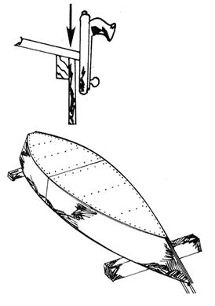

Figure 20. When cutting the bottom, give yourself a little extra. Excess can be easily removed with a rasp or belt sander after the underside has been fastened in position. Butt-join the bottom pieces as you did the sides. Then, attach the ship's belly using plenty of glue and fasteners, preferably screws of brass, galvanized steel or other metal coated with a saltwater resistant substance. Fasten it to the transom and struts as well as the chines.